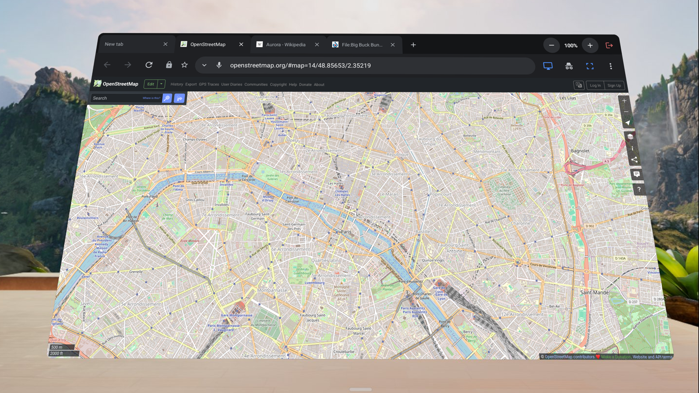
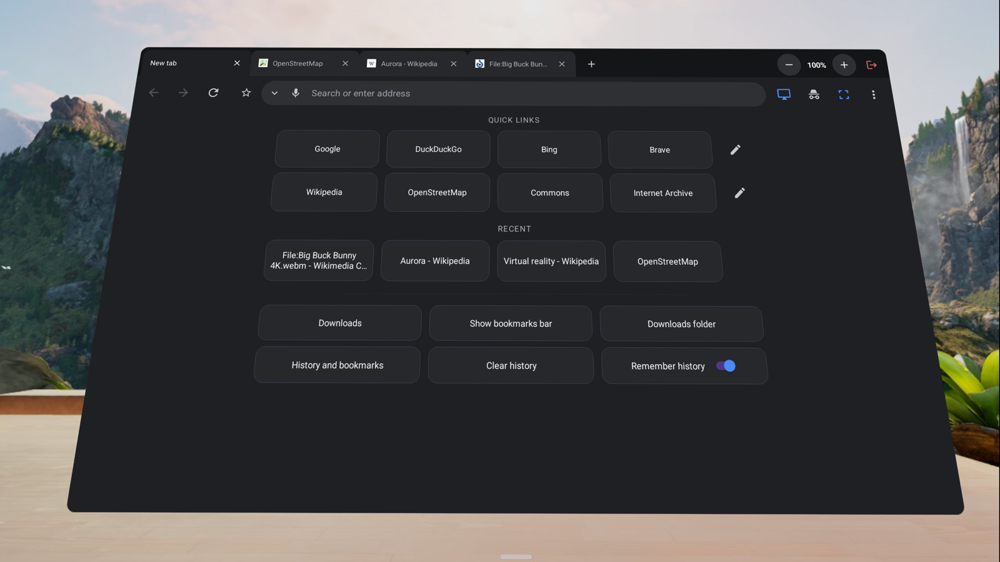
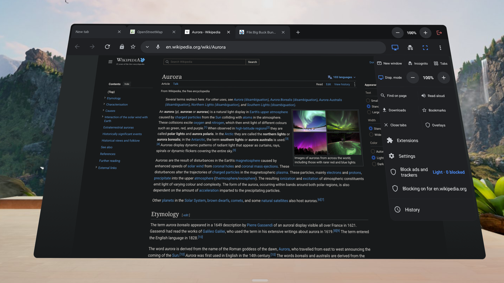
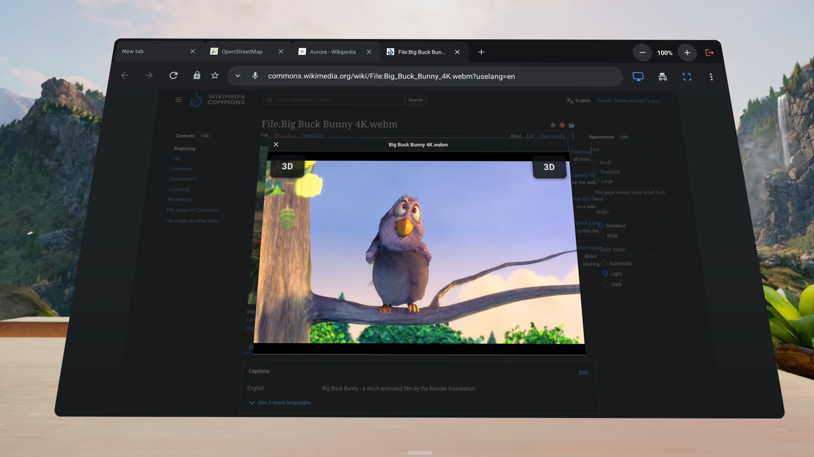
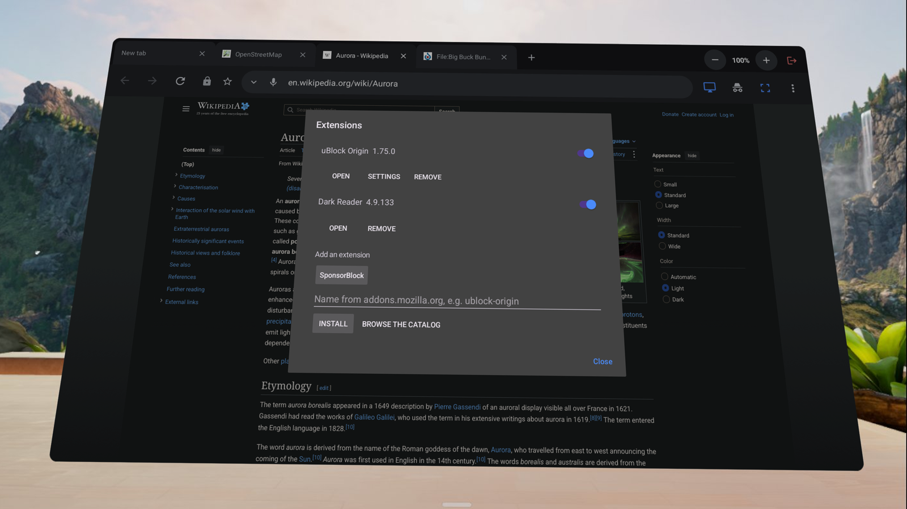

LuciD VR Web Browser opens real desktop websites in a comfortable VR panel, runs browser extensions, blocks ads and sends any web video to an immersive 3D player.

Real desktop layouts fitted to the panel, with mobile and reader views one tap away and per-site zoom.
Install add-ons from addons.mozilla.org — ad blockers, dark mode, video tools — and manage them from one menu.
Tap 3D on a video to watch it in the immersive player: 180°, 360°, side-by-side and passthrough.
Light or strong blocking, filter lists and per-site exceptions — no extension needed.
No account and no analytics. History, bookmarks and passwords stay on your headset; private windows keep nothing.
Large tabs, tab overview, focus view, multiple windows, voice dictation and read aloud.




LuciD VR Web Browser is available for Meta Quest 2, Quest Pro, Quest 3 and Quest 3S on the Meta Horizon Store.
Questions, bug reports or ideas: psopala93@gmail.com.